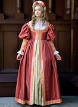

Clothing is an essential aspect of our modern lives, but where did it all begin? The origins of apparel and fashion are cloudy, but it is evident that they have existed for as long as humans have walked the earth.
The first evidence of clothing dates back to the Paleolithic era, which began around 2.6 million years ago. The earliest human ancestors walked around naked until they started covering themselves with animal hides to protect themselves from the cold weather. In addition to offering protection, these hides were also adorned with markings and decorations that were symbolic of religious beliefs.
The Ancient Egyptians were known for their distinct fashion sense, which was reflective of their social status. The wealthy would dress in linen robes adorned with jewels and gold, while the poorer classes would wear simpler cotton garments. Jewelry was an essential accessory, and both men and women would wear makeup and wigs.
The Ancient Greeks were the first to embrace a more relaxed form of clothing, with both men and women wearing draped garments made from wool or linen. This attire was known as the chiton, and it was typically fastened at the shoulders with pins or buttons. The Greeks were also famous for their love of sandals, which they wore with or without socks.
The Roman Empire was known for its luxurious fashion, which was heavily influenced by the Greek style. Women would wear ornately decorated dresses made from silk and satin, while men would wear togas made from wool. Both sexes would also adorn themselves with jewelry and other accessories, such as belts and bags.
The Middle Ages were marked by a dramatic shift in fashion, with people wearing more structured and fitted garments. Men would wear tunics and hose, while women would wear fitted gowns with tight corsets. This clothing was made from wool or linen, and it was often adorned with intricate embroidery and fur trims. Renaissance Dress The Renaissance period saw a return to the flowing garments of the Ancient Greeks, but with a more structured and elegant flair. Women would wear layered dresses and corsets, while men would wear tailored jackets and breeches. This clothing was typically made from expensive fabrics such as silk and velvet, and it was adorned with intricate lace and embroidery.
The Renaissance period saw a return to the flowing garments of the Ancient Greeks, but with a more structured and elegant flair. Women would wear layered dresses and corsets, while men would wear tailored jackets and breeches. This clothing was typically made from expensive fabrics such as silk and velvet, and it was adorned with intricate lace and embroidery.
The Baroque era was characterized by extravagant fashion, with both men and women wearing heavily decorated clothing that was often adorned with pearls, gold, and silver. Women would wear voluminous dresses known as mantuas, while men would wear coats and breeches made from expensive fabrics such as brocade.
In conclusion, the evolution of fashion has been a journey through time, with each period marked by its unique style and fashion sense. From the early use of animal hides to the elaborate clothing of the Baroque era, clothing has been an essential aspect of human culture and civilization. As we look to the future, it is exciting to see how fashion will continue to evolve and change over time.
The Roaring Twenties saw a sudden burst of creative expression in fashion, which was reflected in the Art Deco movement. The flappers of the time embodied the spirit of this era with their short haircuts, sleek dresses, and daring attitudes. In the 1930s, Hollywood took control of fashion with costumers like Edith Head, who brought glamour and sophistication to the silver screen. By the 1940s, fashion took a turn as materials became scarce due to the war effort. Designs were simple, practical, and chic. The New Look, introduced by Christian Dior in the 1950s, gave women a return to opulence with full skirts, cinched waists, and a more feminine silhouette.
The 1960s saw a rebellion against the constraints of society through fashion. The mini-skirt revolutionised hemlines and liberated women’s fashion. Designers like Mary Quant and Yves Saint Laurent were pioneers of the Mod and Bohemian styles that defined the era. In the 1970s, fashion became about self-expression. The Hippie movement celebrated the natural aesthetic, while Disco brought glitz and glamour to the dance floor. The 1980s saw fashion become a reflection of society, with influences from music and movies. The power suit, introduced by Giorgio Armani, defined the working woman’s style, while streetwear and the punk movement provided a counter-cultural look.
The 1990s brought fashion into the post-modern era with designers like Marc Jacobs and Tom Ford creating collections that blurred the lines between high and low fashion. The grunge movement, led by Nirvana and Pearl Jam, brought flannel shirts and ripped denim to the forefront of fashion. The turn of the millennium brought with it a new era of fashion icons, including Alexander McQueen, Stella McCartney, and Donatella Versace. The 2010s saw fashion become more global and diverse than ever before, with designers like Virgil Abloh and Demna Gvasalia challenging the status quo.
In conclusion, fashion is a vital component of our cultural heritage, reflecting the social and cultural changes we undergo as a society. The fashion eras and designers mentioned above are just a few examples of the influential figures that have shaped modern fashion. Each era brings something unique to the table, and we can learn a lot about our past by examining the evolution of fashion.
In conclusion, fashion has played a significant role in shaping and reflecting cultures throughout history. From the ancient Egyptians to modern-day streetwear, fashion has evolved and adapted to the changing times and societal values. It has been used as a form of self-expression, a symbol of status and power, and a means of rebellion. Understanding the origins and evolution of fashion provides insight into the cultural and historical context in which it was created and worn. By examining fashion through a cultural lens, we can gain a deeper appreciation for its impact on society and its ability to communicate important messages.
Welcome to Designrr, your number one source for all things fashion. We're dedicated to provide you the very best of fashion knowledge, with an emphasis on history, styles, and the latest trends.
Have questions or want to work with us? Reach out at info@designrr.com.